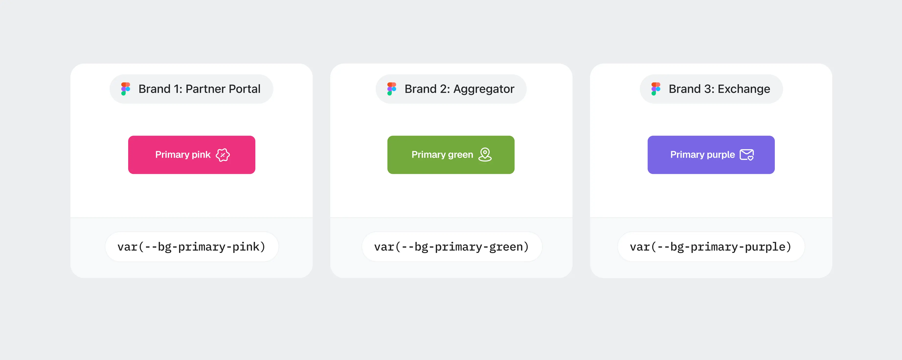
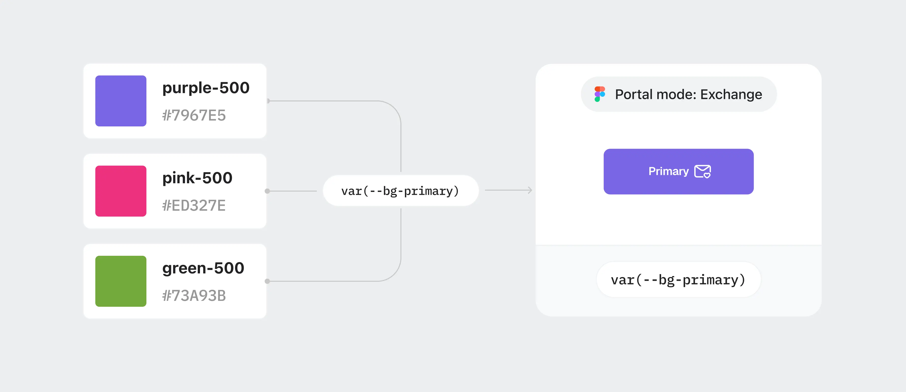
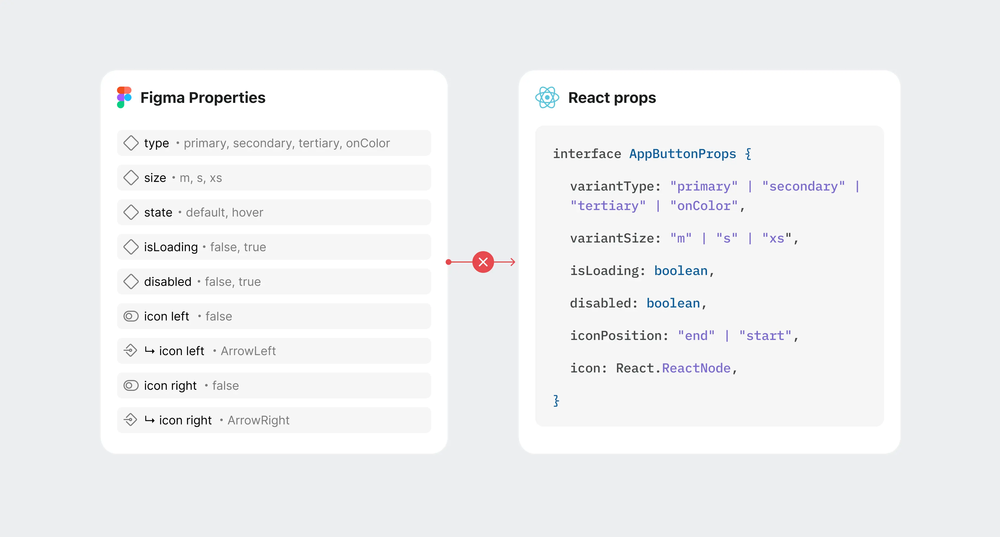
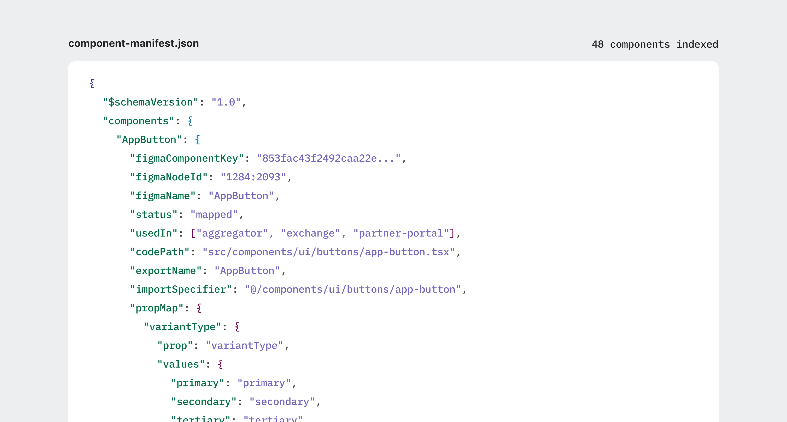
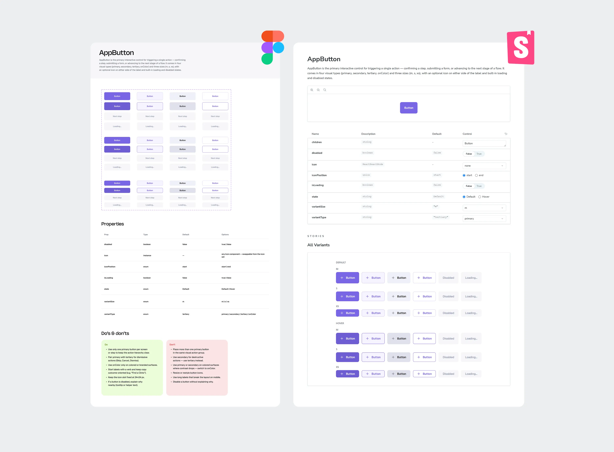

01
Figma Professional
в Figma стоял тариф Professional — без Extended Collections и Code Connect
Библиотеку завели до меня, под один продукт. Мне достался плоский список переменных: по имени можно было понять цвет, но не его роль в интерфейсе. С весны 2026 я целиком вела дизайн-систему — от архитектуры токенов до компонентов, спецификаций и синхронизации с кодом.
Я в AskBefore ведущий продуктовый дизайнер и дизайн-инженер: проектирую интерфейсы и реализую их в коде.
Дизайнеров было двое. Я постоянно вела продукты и принимала решения по архитектуре библиотеки; вторая дизайнер подключалась парт-тайм и работала с готовыми правилами и компонентами. Код проекта пишут также разработчик и фаундер. Описанные решения выбирала и внедряла я.
01
в Figma стоял тариф Professional — без Extended Collections и Code Connect
02
архитектурой я занималась одна, поэтому для каждого решения считала время на реализацию, и то, сколько работы оно добавит потом
03
все три продукта уже работали в проде, библиотеку нужно было перестроить вместе с существующими интерфейсами
01
Токены:
дать трём продуктам свои акценты без трёх наборов компонентов
02
Компоненты:
привести Figma в соответствие с кодом, чтобы новые экраны собирались из существующей библиотеки
03
Спецификации:
записать правила, по которым компонентами смогут пользоваться без моего участия
У каждого продукта свой акцент: фиолетовый у сервиса обмена, зелёный у агрегатора, розовый у партнёрского портала. К весне 2026 все три уже работали в коде, а в библиотеке каждому акценту соответствовал свой набор вариантов.

Компоненты напрямую обращались к переменным, названным по цвету. Чтобы дать кнопке другой продуктовый акцент, я добавляла ещё один вариант. Так библиотека росла вместе с числом продуктов.
В компоненте оказались связаны поведение и продуктовый цвет. Общую правку приходилось повторять в трёх наборах, а следующий продукт добавил бы четвёртый.
Я прошла по трём наборам и сопоставила, за что отвечает каждый цвет. У фона первичной кнопки одна роль — именно её я и вынесла в семантический токен. Так же разобрала остальные роли.
Дальше — два слоя: примитив хранит значение цвета, семантический токен описывает роль и ссылается на примитив. Компоненты привязала к семантике, прямые ссылки на примитивы исключила из правил.
Для каждого продукта я задала свой режим семантического слоя. В Figma это режимы коллекции, в коде — data-атрибут на обёртке продукта.
Компонент остаётся тем же. При смене режима он получает другие значения токенов: та же кнопка становится фиолетовой, зелёной или розовой. Вся библиотека для трёх продуктов при этом помещается в одном файле Figma.

Новый продукт — это ещё один режим семантики, компоненты не меняются. Тема живёт на слое примитивов: там меняются значения цветов, роли остаются прежними.
В системе 150 цветовых токенов. Собственных токенов отступов и радиусов — ноль.
Продукт с самого начала построен на Tailwind, поэтому для отступов я оставила его шкалу. Свой словарь поверх неё добавил бы второе имя для того же значения и поддерживать соответствие между ними тоже пришлось бы мне.
В Figma подключена библиотека с той же шкалой — переменные названы, как классы в коде, один словарь на макет и реализацию.
→ → → Так я сознательно сохранила зависимость от Tailwind. Сценария ухода с него у продукта нет. Если интерфейсу понадобится своя плотность, появится и причина завести собственные токены.
Часть компонентов существовала только в коде, у других в Figma отличались свойства или не хватало состояний. Пока макеты читали люди, это закрывалось разговором. После перехода на сборку через MCP макет стал читать агент. Он брал свойство из Figma, не находил такого в коде и создавал заново.
Оба описания компонента по отдельности выглядели рабочими. При сборке часто получался дубль.

За основу я взяла реализацию: эти компоненты уже работали в продукте. По ним и стала обновлять библиотеку в Figma.
Работала покомпонентно: читала код, проверяла свойства и состояния, затем приводила к ним макет. AI-агенты через Figma MCP помогали находить и подсвечивать расхождения.
Совпадения свойств оказалось недостаточно. Агенту всё ещё нужно было указать, какой компонент из кода соответствует конкретному узлу в Figma. Без этой связи он продолжал создавать дубли.
Для такой связи есть Code Connect, но на нашем тарифе он был недоступен. Я спроектировала свой механизм — component-manifest.json в корне репозитория.

В манифесте записано, какой компонент библиотеки соответствует компоненту в коде и как варианты Figma переводятся в его свойства. Файл версионируется вместе с кодом. В инструкциях я закрепила порядок: до генерации разметки агент читает манифест и импортирует существующие компоненты.
Манифест стал ещё и способом проверять полноту библиотеки. Если запись не заполнена, значит, между Figma и кодом чего‑то не хватает: самого компонента, свойства или соответствия между ними.
Если переименовать компонент или его свойство и не обновить соответствие, сборка не проходит. Расхождение становится видно сразу.
Для новых компонентов в команде закрепили правило: запись в манифесте появляется вместе с компонентом. Я задала формат и правила, а дальше запись может поддерживать тот, кто пишет код.
Сейчас в манифесте 48 записей.
По компоненту в библиотеке можно понять его устройство. Но из него не всегда понятно, когда его использовать, какое состояние выбрать и как он должен себя вести.
Пока экраны собирала я сама, эти правила оставались у меня в голове. Когда подключились другие, понадобилось записать их так, чтобы за пояснениями не приходили ко мне.
Я написала спецификации и разместила их внутри компонентов в Figma. Это важно для работы через MCP: агент получает описание вместе со структурой компонента, за одно обращение.

У всех спецификаций одна структура, по ней дизайнер выбирает компонент для экрана, разработчик проверяет поведение, а агент получает правила для сборки.
В репозитории те же знания разложены по трём разделам: общие правила дизайн-системы, инструкции для агента и спецификации компонентов.
43
опубликованных компонента в продакшн-библиотеке
1
набор компонентов и файл в Figma
3
продуктовые поверхности на одной системе
Система работает в проде на трёх продуктовых поверхностях. В библиотеке 43 опубликованных компонента.
Три цветовых набора я свела в один. Теперь продуктовый акцент задаётся режимом семантической коллекции. Для нового портала не нужна отдельная копия библиотеки.
Систему построила я, а собирают на ней экраны и прототипы уже и другие члены команды. Заданные мной правила токенов и компонентов при этих изменениях сохранились — новые реализации вошли в ту же структуру.
Я бы разделила примитивы и семантику, как только стало понятно, что продуктовых акцентов будет больше одного.
Плоскую библиотеку начали собирать до меня под один продукт, но партнёрский портал и агрегатор на ней строила уже я: для каждого нового акцента добавляла варианты компонентов. К весне у меня было три набора, которые потом пришлось сводить в один.
Разводить примитивы и роли надо было в тот момент, когда стало понятно, что продуктовых акцентов будет больше одного, — тогда новые продукты собирались бы на общей библиотеке и не пришлось бы переводить на неё уже работающие интерфейсы.